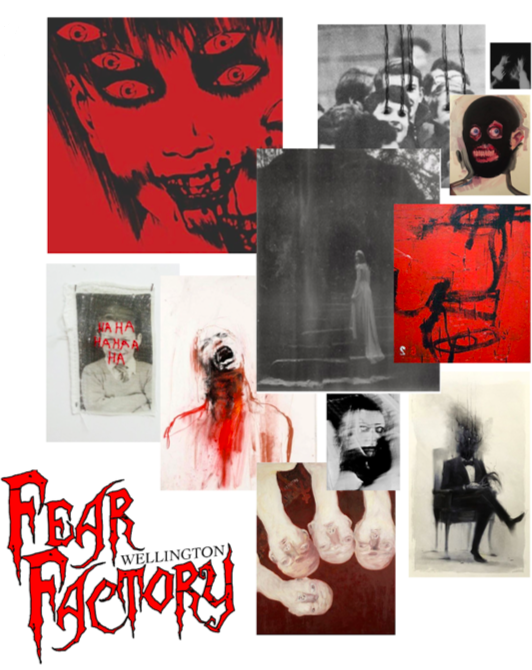

Fear Factory
March 2020
Context
A store window is no longer just a useful space that a retailer uses to promote their products. They are created to entice, enthuse and challange the consumer. Innocation, creativity and knowledge of the brand are all aspects that go into conceptualising these three-dimensional pieces of pavement design.
Fear Factory
In this project, I had chosen Fear Factory Wellington as my retailer. It is a haunted house located on Cuba Street. I produced a crate design that successfully reflects the retailer's aesthetic.
